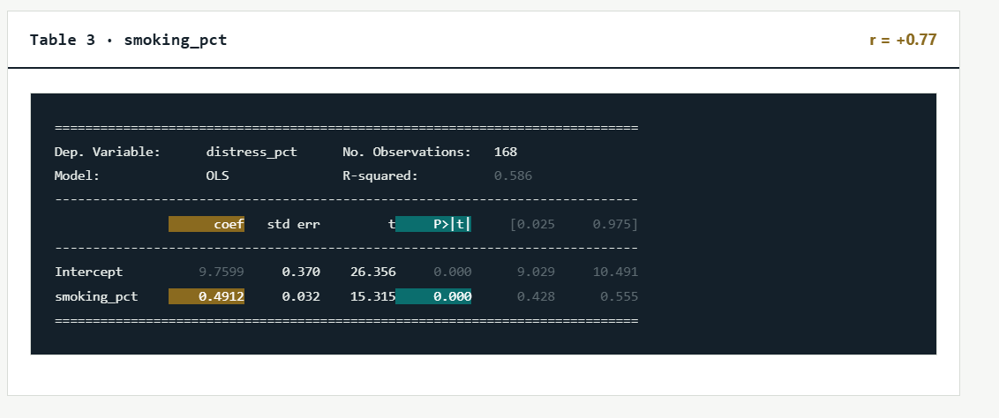

- Correlation: The correlation between smoking and psychological distress is +0.77, which indicates a strong positive relationship. This means areas with higher smoking rates tend to have higher psychological distress rates.
- Slope: The slope is +0.4912, meaning that for every 1 percentage-point increase in smoking rates, psychological distress is predicted to increase by approximately 0.49 percentage points.
- P-value: The p-value is less than 0.001, which is below 0.05. This means the relationship is statistically significant.
What it means for people: Smoking and psychological distress have a strong positive relationship (r = +0.77). The slope of 0.4912 means that for every 1 percentage-point increase in smoking, psychological distress is predicted to increase by about 0.49 percentage points. The p-value is less than 0.001, which means the relationship is statistically significant.